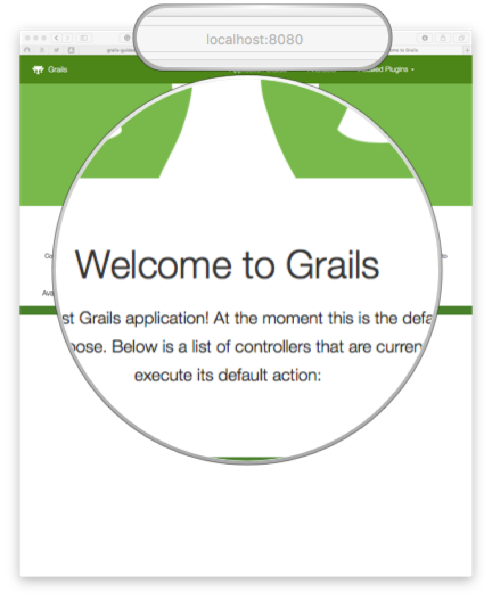

Run Grails Geb Functional Tests with multiple Browsers
Run tests with Firefox, HtmlUnit, Chrome
Authors: Sergio del Amo
Grails Version: 4
1 Grails Training
Apache Grails Training
Apache Grails is now part of the Apache Software Foundation. The community-maintained training catalog is being migrated; in the meantime see the Learning page for current resources, recorded talks, and links to other community-supplied training material.
2 Getting Started
We are going to show how to run Geb tests with multiple browsers (Firefox, HtmlUnit and Chrome)
2.1 What you will need
To complete this guide, you will need the following:
-
Some time on your hands
-
A decent text editor or IDE
-
JDK 11 or greater installed with
JAVA_HOMEconfigured appropriately
2.2 How to complete the guide
To get started do the following:
-
Download and unzip the source
or
-
Clone the Git repository:
git clone https://github.com/grails-guides/grails-geb-multiple-browsers.git
The Grails guides repositories contain two folders:
-
initialInitial project. Often a simple Grails app with some additional code to give you a head-start. -
completeA completed example. It is the result of working through the steps presented by the guide and applying those changes to theinitialfolder.
To complete the guide, go to the initial folder
-
cdintograils-guides/grails-geb-multiple-browsers/initial
and follow the instructions in the next sections.
You can go right to the completed example if you cd into grails-guides/grails-geb-multiple-browsers/complete
|
3 Writing the Application
3.1 Geb Config
We handle Geb Configuration with a GebConfig.groovy file
import org.openqa.selenium.chrome.ChromeDriver
import org.openqa.selenium.firefox.FirefoxDriver
import org.openqa.selenium.htmlunit.HtmlUnitDriver
environments {
htmlUnit {
driver = { new HtmlUnitDriver() }
}
chrome {
driver = { new ChromeDriver() }
}
firefox {
driver = { new FirefoxDriver() }
}
}We need to add the different browser dependencies
testImplementation "org.grails.plugins:geb"
testRuntime 'net.sourceforge.htmlunit:htmlunit:2.35.0'
testImplementation "org.seleniumhq.selenium:htmlunit-driver:2.35.1"
testImplementation "org.seleniumhq.selenium:selenium-remote-driver:3.141.59"
testImplementation "org.seleniumhq.selenium:selenium-api:3.141.59"
testImplementation "org.seleniumhq.selenium:selenium-support:3.141.59"
testRuntimeOnly "org.seleniumhq.selenium:selenium-chrome-driver:3.141.59"
testRuntimeOnly "org.seleniumhq.selenium:selenium-firefox-driver:3.141.59"We are going to change the Geb environment passing a system property. Because of that, we pass system properties to integration tests:
integrationTest {
systemProperties System.properties
}3.2 Geb Test
We do a simple Geb functional test. It verifies that there is <h1> header with the text Welcome to Grails when we visit the home page.

package grails.geb.multiple.browsers
import geb.spock.GebSpec
import grails.testing.mixin.integration.Integration
@SuppressWarnings('JUnitPublicNonTestMethod')
@SuppressWarnings('MethodName')
@Integration
class DefaultHomePageSpec extends GebSpec {
void 'verifies there is _<h1>_ header with the text _Welcome to Grails when we visit the home page.'() {
when:
go '/'
then:
$('h1').text() == 'Welcome to Grails'
}
}4 Running the Application
4.1 Run Tests with Firefox
./gradlew -Dgeb.env=firefox integrationTest4.2 Run Tests with Chrome
To run the tests in Google Chrome, you need to download the appropriate drivers.
./gradlew -Dgeb.env=chrome -Dwebdriver.chrome.driver=/Users/sdelamo/Applications/chromedriver integrationTest4.3 Run Tests with HtmlUnit
./gradlew -Dgeb.env=htmlUnit integrationTest5 Do you need help with Grails?
Help with Apache Grails
Apache Grails is supported by an active community of contributors and the Apache Software Foundation. If you need help working through a guide, want to discuss the framework, or have run into something that looks like a bug, the channels below are the right place to start.
-
Slack - real-time conversation with the Apache Grails community.
-
Developer mailing list - design discussions and contributor coordination.
-
Users mailing list - end-user questions and answers.
-
Issue tracker on GitHub - file a bug or feature request against the framework.
For Grails plugins, see the matching project on the apache org or the plugin’s own GitHub repository.